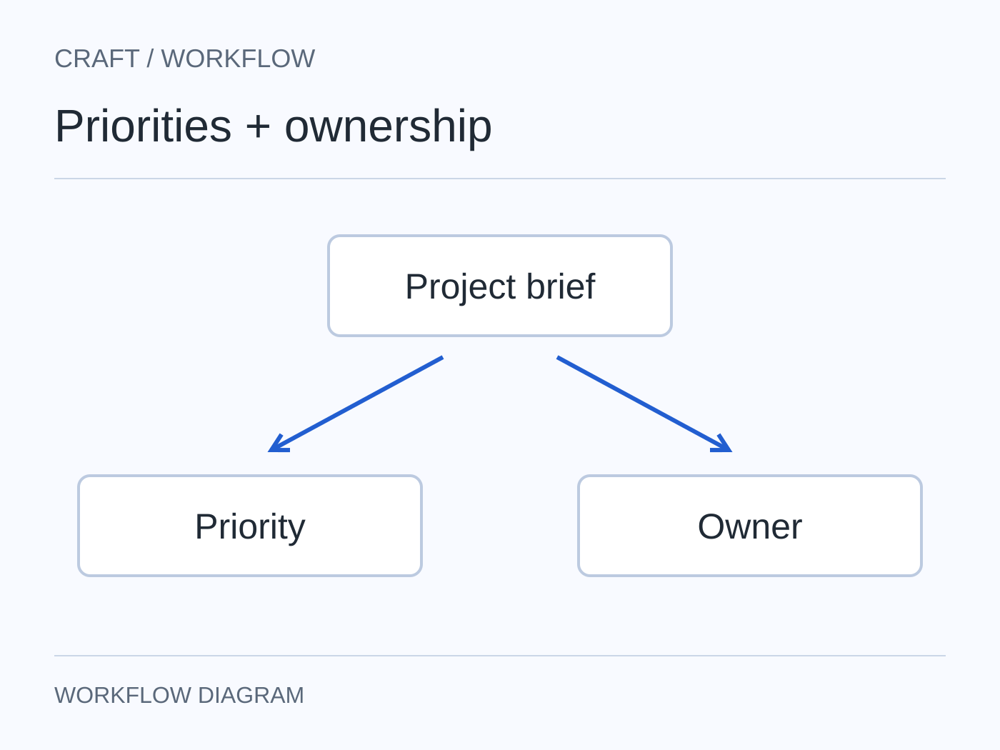
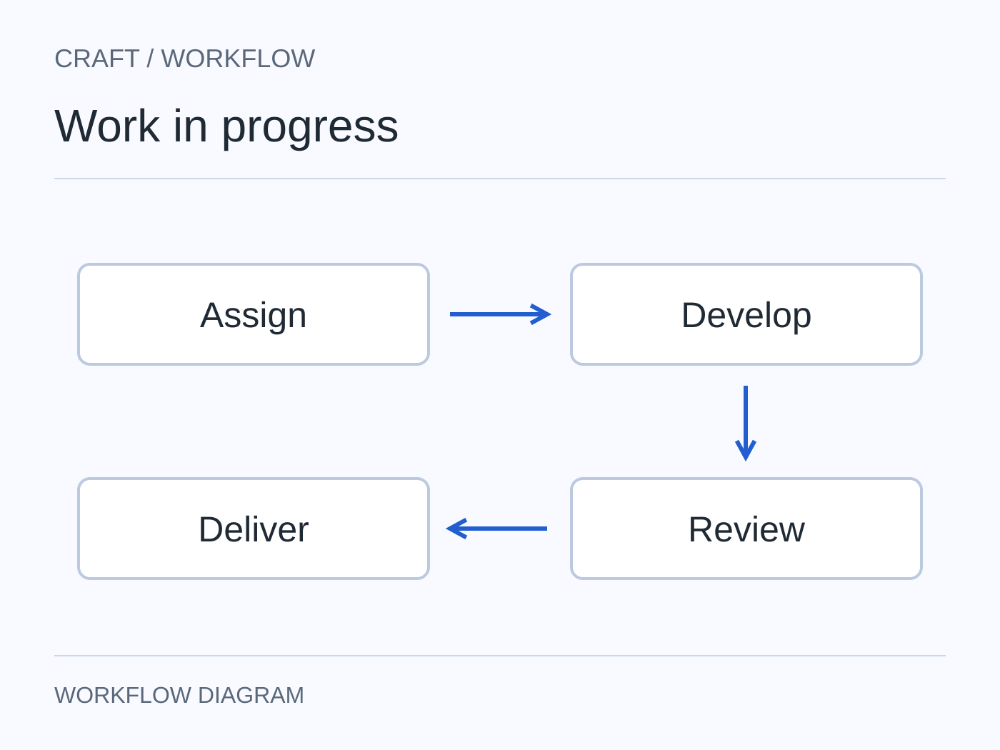
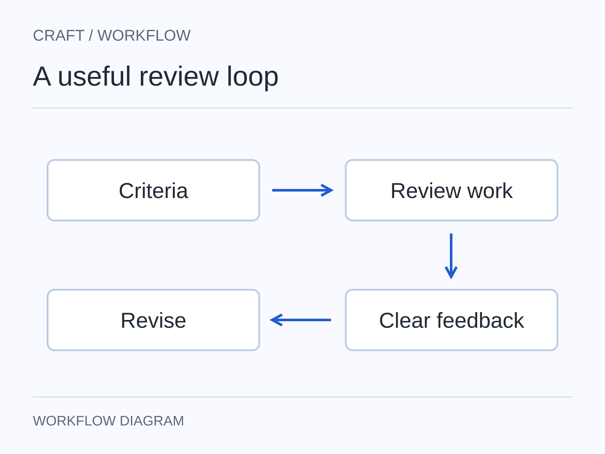
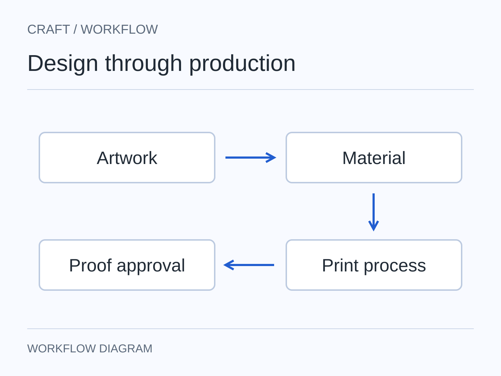

Set priorities and ownership
Turn business requirements into tasks, owners and review points so each designer knows what needs attention and why.

Advertising2026
Stationery AdvertisingSelected stationery advertising across posters and retail communication.
Easy to understand.
Distinct enough to remember.
Practical enough to produce.
Selected work
Ten design disciplines. Choose a category, then open a project to view the full image set and design details.
Design leadership
I use a simple workflow to manage priorities, responsibilities, design reviews and production, so a small team knows what to do and when.

Turn business requirements into tasks, owners and review points so each designer knows what needs attention and why.

Use project codes, schedules, task logs and file structures to track capacity, dependencies and bottlenecks before they affect delivery.

Review quality, revisions and delivery patterns to give specific feedback, rebalance work and support each designer’s development.
Team workflow
A workflow that connects the brief, task allocation, design review, production and delivery, with ownership and decisions documented along the way.
Team management / 01
Define the objective, constraints, decision-maker and success criteria. A solid brief keeps the team focused on the same problem.
Team management / 02
Assign an owner, deadline and checkpoint based on workload, skill level and project risk, not simply who is available first.
Team management / 03
Review hierarchy, brand fit, usability and feasibility against agreed criteria. Revision codes keep feedback easy to track and reduce repeated discussions.
Team management / 04
Check materials, print method, tolerances, finishing, cost and supplier requirements while there is still time to improve the design.
Team management / 05
Package approved files, record key decisions and review the delivery. The project ends, but useful information stays for the next assignment.
Production knowledge
I consider materials, printing methods, cost, timing and supplier requirements during design development, so the work is ready for production.
See the production process
Selected experiment / Object system
A product study covering component structure, visual hierarchy, material, colour and presentation standards.
View the experimental case study
Move to inspect · Tap to hold a label
Somchai Sompiew
Bangkok · Worldwide
I have managed small design teams of 2–3 people and developed workflows across briefing, task allocation, design review, production and delivery.
My role is to set expectations, track progress and give useful feedback, while staying involved enough to understand design quality, business needs and production requirements.
Working principleBrief first. Track the work. Give useful feedback.
Brand direction · Packaging development · Team workflow